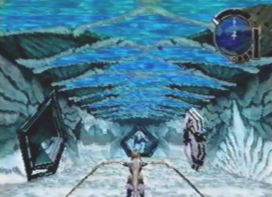
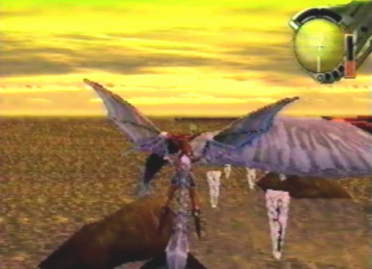
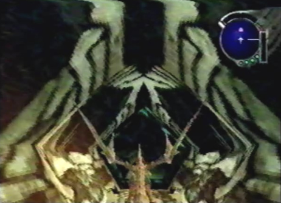
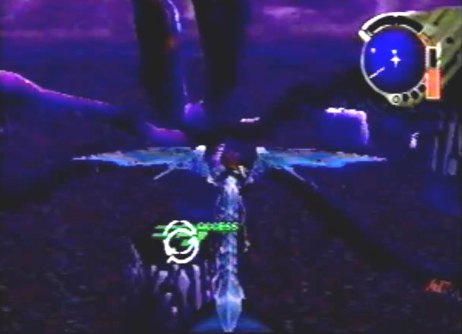
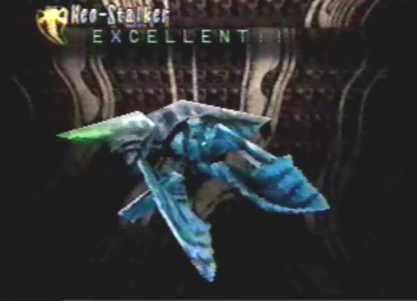

Diary Entry 16: Uru Craymen's Trap: The Protect Key Ordeal Before venturing off to Uru, I took it upon myself to go visit Fei, at the caravan. I found her in the back washing a Coolia. When I approached her, see gave me a Palmer Amulet and said it was a good luck charm worn by hunters. In return, I gave her the Amirkhan Ring I had received from Bezer. She was much happier now and I could tell she was starting to like me a lot. I had no time for love, the adventure awaiting me at Uru, beckoned me to leave. I said my good-byes and was off to Uru. It was just as Paet showed me, the Sunken Southern Ruins of Uru. I remembered him saying that the black dragon had flown to Uru Deep North, or so it was called. As I flew north, I could see strange ruins to the west and east, each facing each other on opposite sides. When I examined the one to the west, a voice spoke out a message telling me to enter Protect Key code for Protect Key # 1. It seemed that I needed some sort of key. Examining the one to the east gave me a similar message, telling me to enter Protect Key code for Protect Key # 2. I wondered where these Protect Keys could be? Flying farther north brought the dragon and I to a cave. In front of the cave was something that looked like a Keystone, blocking the entrance. There was also a long tunnel behind it. I knew the tunnel had to take me past the cliffs, but I had to find a way to remove the Keystone first. From the cave, we flew a little ways to the southeast. We came upon yet another Keystone. Swimming below it was a Kinoshita Whale. I had previously thought those creatures were extinct! He seemed to want a lot of attention, so I had the dragon shoot a laser at it. In a playful manner, the whale knocked over the Keytone with its tail! We flew back to the one near the cave and found another Kinoshita Whale. Once the whale swam under the Keystone, the dragon shot a laser at its head. The whale knocked over the Keytone, reveling the opening to the cave. Even though the Keystone blocking the cave was gone, something just wasn't quite right. The tunnel behind the cave wasn't connected to the northern cliffs. We flew behind the cave and along its tunnel. Near the middle of the tunnel we found a rotating device. The dragon shot a laser at it 3 times, causing it to rotate the tunnel and connect it to the cliffs. Now we entered the cave and made our way into the passage. As we flew through the underwater tunnels, we could see an abundance of wondrous sea life which occupied the surrounding area. We exited the passage into Uru Deep North. We were then immediately ambushed by Craymen's Fleet. We made quick work of them. I wondered what they were doing here? Directly west of the exit, we found a strange glowing ruin. When we examined it, a massage told me that the underground facilities had been sealed with three keys. In order go gain entry, I would have to collect all three Protect Keys and deactivate the seal. It also said the controls to the guardian Drenholm, had also been deactivated and I should use caution when unlocking the seals. After hearing the message we explored some more and found a series of black ruins, submerged under the water. I knew this had to be the way into the underground facilities. West of the black ruins we found a small alcove containing a panel. When we examined the panel, we received Protect Key # 1. The ruins said if I unlocked the seals with the keys, I would be able to understand the purpose of this place. We left Uru Deep North and headed back to Uru Sunken Southern Ruins. As we flew back to the first Protect Key ruin, we were ambushed by Craymen's Fleet once more. They just wouldn't give up and we had to take them down yet again. Craymen's forces seemed to be everywhere! I wondered if these ruins were linked with the Tower? We finally made our way over to the first Protect Key ruin. When we activated it, we received a message telling us to confirmed Protect Key # 1. That's how it worked! The first seal had been broken. I knew something must have changed in Uru Deep North, where I found the key. We returned there to find the black ruins had raised out of the water! To the east of the black ruins, we found another alcove containing Protect Key # 2. We made our way back to Uru Sunken Southern Ruins once more and headed for the second Protect Key ruin. Craymen's Fleet, the bastards, attacked us for the third time! This time, they went all out and sent wave after wave of battle ships. After the long drawn out battle, we activated the second Protect Key ruin and confirmed Protect Key # 2. After doing so, the ruin suddenly shot a laser stream over to the Protect Key ruin across from it! This caused something strange to occur. The armored plating that surrounded the Protect Keys, began to fall off. It was then that we ran into Zastava, the man who played a major role in the murdering of my friends! He said I had just activated the Guardians of Uru and would soon be reunited with all of my dead friends. He flew away with his aerial flying machine, laughing at our unfortunate situation. The dragon attempted to shoot homing lasers at the creep, but amazingly he just dodged them. It was no use dealing with him now, the two guardians had formed into one being called Drenholm, just like the ancient recording said. We were in for the battle of our lives! It was a close one, but we managed to defeat the two guardians and survive. Craymen's forces were smarter than I thought. They were the ones who deactivated the controls to Drenholm. Once we confirmed the Protect Keys, the guardians awakened and we were left to do their dirty work. It was all just a stupid trap! Well, on the positive side we had broken the second seal, so it was time to head back over to Uru Deep North and see if anything happened to the Black Ruins. Upon Returning there, we found that the ruins were now moving around in a circular motion. Next to the Black Ruins, we found a strange green symbol. When we examined it a message told us to enter protect Key code for Protect Key # 3. It was the final seal! Every time I broke a seal, something would change. If there was a passage that lead to the Tower, it had to be here. We eventually found Protect Key # 3, south of the Black Ruins. After our ordeal with the Protect Keys, Craymen's Fleet and the Guardians, the dragon and I were exhausted. Before confirming the last key, we left Uru and headed back to camp. After the dragon and I rested up, I thought I'd give him some much needed attention for fighting so hard. After petting him 6 times, I left camp and Upon returning the next day, we formed a special bond. To show his thanks, for taking such good care of him, the dragon learned Astral Phantoms, a technique that would surely help us out in the future battles to come. Before heading back to Uru Deep North, I made sure to go visit Jared's shop in the Village of Zoah and stock up on supplies such as: Elixir Medis, Berserk Minors and Free Actions. After preparing ourselves for the many battles that awaited us, we headed back to Uru Deep North. With Protect Key # 3 in hand, we activated the green symbol once more and finally confirmed the last Protect Key. A message told us that plant entry was granted. As soon as the message ended, strange lights began to surround the Black Ruins and a portal appeared above them. It was our way in! We flew towards the portal only to be attacked by that girl and her dragon! We dodged her dragon's laser fire, ultimately engaging them in another battle to the death. After the dragon and I weakened the girl's dragon, both of our dragons in a final attempt to take each other out, rammed one another with giant force fields. The girl told me that if I interfere with Craymen's plans again, she would kill me. I told her she didn't truly know him and that he was an insane madman! Before we both could say anything more, the two opposing force fields shattered and the girl and I were flung off of our dragons. We fell downward, one after the other into the portal. Without our dragons, it would be a life or death battle surviving the Underground Ruins of Uru. |
|
| Divine
Overview |
1. Before going to Uru, be sure to stop by the caravan and talk to Fei, who will be out back tending to her Coolia. She will give you a Palmer Amulet. In return, give her the Amirkhan Ring you received from Bezer, while at the Village of Zoah. It's best to give her the ring, but if you don't have it, you can give her a Gem Lens instead. |
2. When you arrive at Uru, do some exploring. You will find the first Protect Key Ruin in the middle of the map, to the left hand side. |
3. The second Protect Key Ruin is directly across from the first one. You will have to find the corresponding Protect Keys, numbers 1 and 2, that can be found at Uru Deep North. You will then, have to come back to Uru Sunken Southern Ruins, and activate each Protect Key Ruin with its corresponding key. Doing so will break certain seals on the Black Ruins in Uru Deep North. |
4. Flying directly north, will bring you to a cave connected to a long passage. In front of this cave, is a large Keystone that is blocking the entrance, as well as a Kinoshita Whale, swimming below it. You need to seek out another Keystone, that can be found southeast from the first. |
5. Once you find the second Keystone, another Kinoshita Whale will be swimming under it. When it is near the Keystone, lock-on to its head and have the dragon shoot a laser at it. In a playful manner, the whale will knock over the keystone with its tail. |
6. Now, return to the first Keystone by the cave. Lock-on and fire a laser at the Kinoshita Whale that is swimming under it and the whale will knock over the Keystone, revealing the opening of the cave. |
7. When you try to enter the cave, Edge will say he needs to find a way to connect the passage behind it, to the cliffs. |
8. Fly behind the cave and along the passage. You will find a rotating device at the center of the passage. Lock-on and fire a laser at this rotating device 3 times, to connect it to the cliffs. |
9. Once it's connected to the cliff, you will now be able to enter the cave leading into the Uru Passage. |
10. When you enter the first main chamber, the door in front of you will be sealed off. You can't enter it as of now, but once you defeat an upcoming sub-boss called Drenholm, the door will open. |
11. As you fly through the next passage, notice the wondrous sea life which occupies the surrounding area. You'll find a number of seal-like creatures, as well as schools of odd little fish. |
 12. After exiting the passage, you will be in a second chamber containing 2 doors and a save device. The nearest door to the left, is also sealed off and won't open, until you defeat the sub-boss Drenholm. Save your game, and head out the northern door. |
13. You will arrive at Uru Deep North and be immediately ambushed by Craymen's Fleet. |
14. You will have to fight an Annihilator, two waves of Rogues and an aerial battle group containing another Annihilator, with 3 Inferno ships surrounding it. The battle isn't too hard, show them who's the boss. |
15. After the battle, fly west from the exit and examine the strange illuminated ruin, to get a message. The message will tell you to collect all 3 Protect Keys and deactivate the seal. |
16. Notice the Black Ruins submerged under the lake water. Every time you collect a key from Uru Deep North and activate the corresponding Protect Key ruin, at Uru Sunken Southern Ruins, a seal will be broken here at Uru Deep North. |
17. Protect Key # 1 can be found in a small alcove, west of the Black Ruins. Just lock-on to the small device to acquire the key. |
18. With the first key, head back to Uru Sunken Southern Ruins and fly towards the first Protect Key Ruin. |
19. You will be ambushed by Craymen's Fleet once more. This time you will be up against an Annihilator, 3 Punishers and an attack group containing yet another Punisher and 3 Rogues. |
20. After the battle, head to the first Protect Key Ruin and confirm Protect Key # 1. This will break the first seal at Uru Deep North. |
21. Return to Uru Deep North, to find the Black Ruins raised out of the water. |
22. Protect Key #2 can be found in another small alcove, east of the Black Ruins. |
23. Head back to Uru Sunken Southern Ruins once more and head towards the second Protect Key Ruin. |
24. Craymen's forces (the bastards) will engage you in battle, for the third and final time. This time, you will have to take out an aerial battle group containing 1 Annihilator and 3 Infernos, a wave of 6 Rogues, 3 Punishers, another aerial battle group and an attack group, containing 1 Punisher and 3 Rogues. |
25. After the long battle with Craymen's forces, make sure to leave Uru, heal your dragon and buy as many Free Action items as you can afford, 6 or 7 should be sufficient. I say this, because activating the second Protect Key Ruin, will cause you to fight a sub-boss called Drenholm, who has an attack that can completely immobilize your dragon. Free Action items give your dragon back his mobility and heal his Stop condition. Once you stock up on supplies, head back to Uru and confirm Protect Key # 2, at the second Protect Key Ruin. This will break the second seal at Uru Deep North. |
26. The second Protect Key Ruin will send a laser stream directly at the first Protect Key Ruin. This causes the shells of both Protect Key Ruins to fall off, revealing the Uru guardians inside. |
27. The guardians discard the unnecessary parts of their former Protect Key shells. |
28. Unbeknownst to Edge, the activation of the 2 Protect Keys which caused the 2 guardians to emerge, was a trap laid by Craymen's Fleet. Zastava laughs at Edge's stupidity. |
29. You will now be forced to fight the sub-boss, Drenholm. |
30. As the two guardian's systems overload, the smaller hovering guardian, will go ballistic, firing a laser stream at the lager one, destroying it and itself in the process. |
 31. After the battle, new item boxes will have appeared, hanging from the mushroom-like relics. |
32. Also, D unit 05 and one other item behind it, will have appeared near the entrance to the cave. You wont be able to acquire D Unit 5 until you have a laser rank of # 4. So, you'll have to come back and get this later on. |
33. Fly back to the first chamber in the Uru Passage. You will notice that the northern door that was once sealed, can now be opened. |
 34. Upon flying past the newly unsealed door and through the passage, you will come to another sealed door. This door can be opened very easily. |
35. Fly to the second chamber to find that the nearest door to the left has also been unsealed and can now be opened. Fly past the door and through its passage. |
36. You will arrive in a room containing 2 item containers. The one on the left contains Elixir Maxis X 2 ( very good healing items). And the one on the right contains Elixir Medis X 2. Now head into the northern door. |
37. In the northern room past the item containers, you'll find a switch that when activated, will open the sealed door in the first chamber. |
38. Now, head back to the first chamber, fly through the newly unsealed door and into yet another room, containing 3 more item containers. The one on the left contains Dynes Chip X 1, the one to the right contains, Elixir Maxis X 1 and the one in the middle contains the Extra Class berserk technique, Plasma Vortex. |
39. Once you return to Uru Deep North, 3 item containers will have appeared to the west of the exit and 4 more cam be found to the south. |
40. Dont miss D unit 06. It can be found north of the Black Ruins in a small alcove. |
 41. Examine the strange green symbol near the rotating Black Ruins. You will hear a message saying, to enter the Protect Key code for Protect Key # 3. |
42. Protect Key # 3 can be found to the south of the Black Ruins. Once you acquire protect key # 3, exit to the World Map and go to Camp. If you haven't learned the Extra Class berserk technique, Astral Phantoms, now is the time. |
43. If you haven't learned the special beserk technique Astral Phantoms yet, leave Uru and level up to 26. You can do this easily by fighting the Sand Mites in the Garil Desert/Blue Ruins. Once you reach level 26 just go to camp and pet the dragon a few times by leaving and re-entering camp to learn the technique.
44. You can fight the Sand Mites in the Blue Ruins found in these numbered areas. The easiest way to figh them is to go to sections 3 and 4 and fly around in circles until the battle begins. You'll reach level 26 in no time! If the encounters stop, leave and re-enter the area. |
 45. Also, note that you can only fight the Neo-Stryder and Neo-Stalker enemies in Uru at sunset. To change the time of day leave the map and re-enter until it is sunset. Special Thanks to forum member Delta for reminding me about this! Update: You can also fight them at any time of the day within these exact spots shown above on Disc 3 and 4. Special thanks to Discord member PersonGuy for uncovering this info! |
46. After returning to Uru Deep North, access the green symbol and confirm Protect Key # 3. Entry into the Underground Ruins of Uru will be granted. |
47. The ruins will then activate a portal. |
48. Before you have a chance to enter the portal, the girl and her black dragon, will come out of nowhere, attempting to stop your entry into the underground ruins. You will have to get past them to enter the ruins. Prepare yourself! |
49. After the battle, the two dragons will ram each other with opposing force fields. Both force fields will then shatter. |
50. Both Edge and the girl get flung off of their dragons and descend into the portal below, leading into the Underground Ruins of Uru. |